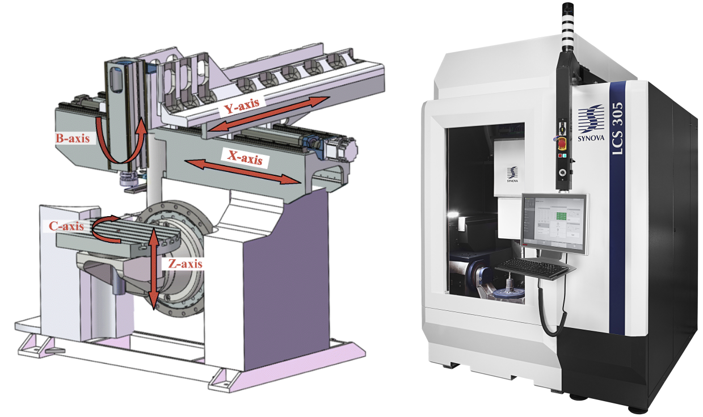
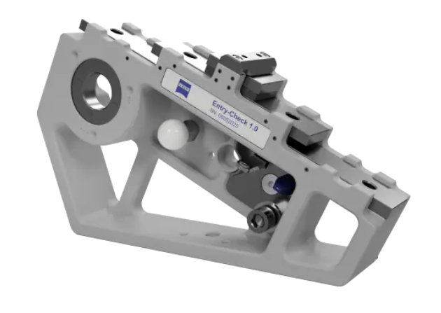
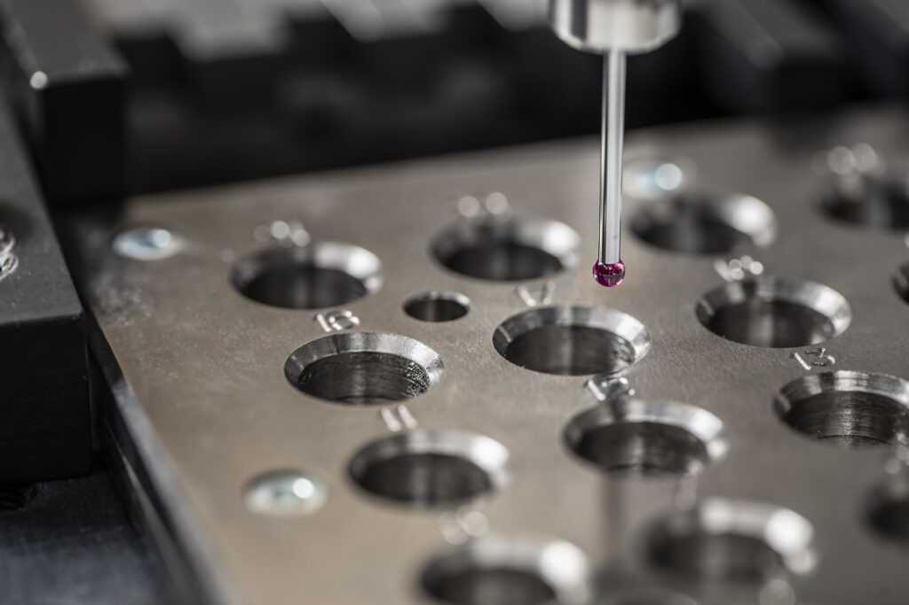

5-Axis CNC Calibration Method Development
Establishing a rigorous, norm-compliant calibration procedure to correct rotational and translational axis misalignments on Synova's Laser MicroJet® CNC machines.

Illustration of a generic 5-axis CNC machine layout (left), showing the X, Y, Z translational and A, C rotational axes, alongside the Synova LCS305 Laser MicroJet® machine (right), used as the primary test platform during this internship. Credits: ResearchGate (left), Synova SA (right).
Context: Synova SA & the Laser MicroJet® Technology
Synova SA is a Swiss company specializing in the design and manufacture of 3- and 5-axis CNC machines built around their patented Laser MicroJet® (LMJ) technology. The principle is elegant: a water microjet — roughly 50 microns in diameter — acts as a waveguide for a laser beam, delivering it precisely to the workpiece surface. Unlike conventional laser cutting, where the beam must be focused at a specific focal depth (leading to bevelled edges and limited cut depth), LMJ enables deep, straight cuts with excellent edge quality.
The water jet simultaneously cools the cut zone, drastically reducing thermal deformation — a critical advantage when machining temperature-sensitive materials. The narrow jet also minimizes material loss, which is especially significant for high-value materials such as diamonds. Applications span medical devices, semiconductor wafers, watchmaking, aerospace components, and diamond processing.


The Calibration Challenge
Synova's 5-axis machines achieve positioning repeatabilities on the order of ±5 µm — a demanding specification that requires the five motion axes (three translational, two rotational) to be exceptionally well aligned. While 3-axis calibration is relatively mature, adding two rotational axes introduces additional sources of geometric error: angular misalignments that, if left uncorrected, propagate into part inaccuracies that are difficult to diagnose post-machining.
The industry-standard approach to machine calibration relies on artefacts — physical objects of precisely known geometry — measured using the machine itself. Deviations between the machine's readings and the known reference dimensions reveal the nature and magnitude of the geometric errors present. International standards such as the ISO 230 series codify these procedures, covering everything from linear positioning accuracy to rotary axis error motion.

A precision calibration artefact by Zeiss Metrology — used as a dimensional reference during machine qualification. Source: Zeiss Metrology.

A hole-plate artefact: an array of precisely positioned bores used to characterize translational axis positioning errors. Source: DFM.
Work Conducted
My internship was focused entirely on designing and validating a new calibration workflow suited to Synova's machines and production environment. The work unfolded across the following phases:
- Internal & External Literature Review: Survey of calibration methods used in the academic literature and at Synova internally, identifying gaps and limitations in the existing approach.
- Weakness Analysis: Systematic identification of the shortcomings in Synova's calibration procedures at the time — specifically regarding rotational axis error characterization.
- CNC Controller Capabilities Assessment: Evaluation of the correction mechanisms natively available within the Bosch CNC controller platform used by Synova, to determine what could be compensated in software.
- Calibration Method Development: Design of a step-by-step procedure to correct both rotational and translational axis misalignments, leveraging artefact-based measurements and norm-compliant protocols.
- Experimental Validation: Full application and validation of the developed method on a production LCS-305 machine.
The detailed results, correction values, and procedural documentation remain confidential as proprietary Synova IP. The work certificate below confirms the scope and successful completion of the internship.
Work Certificate
The following document was issued by Synova SA upon completion of the internship, attesting to the work performed.